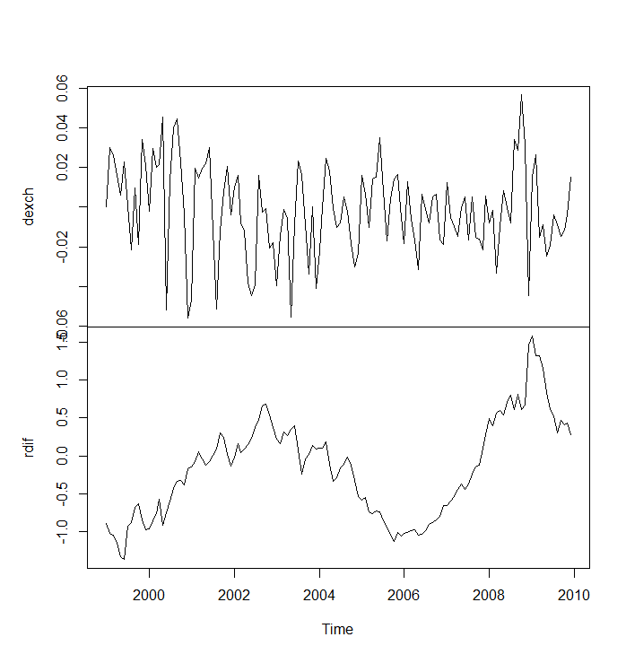

1 Introduction
1.1 Background
In this course, we will consider statistical models for time series data. We concentrate, for example, the following questions:
How such models can be applied to describe and forecast time series data?
How are the model parameters estimated?
How are hypotheses tested?
We start with a review of univariate time series models and methods. The main objective is, however, in multiple time series case where multiple time series are analyzed simultaneously. In addition to typical multivariate (multiple-equation) models, we also consider some essential tools for large (big) dependent data and introduce some ideas and machine learning-based techniques for time series.
Time series data are analyzed in various fields, including economics and finance, as well as social, natural, engineering, and medical sciences.
A (univariate) time series is a collection of data where observations correspond to consecutive time periods. A common notation for time series data is \(y_{t}\), \(t=1,\ldots,T\), where \(t\) denotes the time period and \(T\) is the total number of observations. The interval between observations \(y_{t-1}\) and \(y_{t}\), or \(y_{t}\) and \(y_{t+1}\), represents a unit of time, for example, an hour, a month, a quarter or one year. In many cases, it is natural to use more concrete labels for the time periods, such as \(t=2000,\ldots,2024\) for yearly data, or \(t=2000:1, 2000:2,\ldots,2024:12\) for monthly observations. Therefore, occasionally \(T\) may also refer to the final time label, such as 2024:12 (December 2024).
A vector-valued time series or multiple time series constitutes observations on a vector-valued variable in subsequent periods. We denote such a series by \[\begin{equation*} \boldsymbol{y}_{t}=(y_{1t},...,y_{Kt}), \quad t=1,\ldots,T, \end{equation*}\] where \(t\) indicates period or date, \(K\) is the number of variables and \(T\) is the number of observations.
In this material, the bolded font in mathematical notations implies vectors and matrices (for the text it emphasizes important parts and concepts).
For example, a classic three-variable (that is, \(K=3\)) monetary policy model contains the (real) GDP (Gross Domestic Product) or unemployment rate, inflation and interest rate.
If \(K=1\), then \(y_{t}\) is a univariate time series. Hereafter, when analysing the \(k\)th time series of the vector-valued \(\boldsymbol{y}_t\), we may also denote it as \(y_{kt}\).
We assume throughout the course that the variables \(y_{1t},\ldots,y_{Kt}\) are real-valued time series processes or can be at least treated like that. That is, observations are real numbers. In particular, this means that we do not allow clearly discrete such as binary-valued time series in this course. These discrete-valued cases are considered more detail in Nonlinear Time Series Analysis (University of Turku, TILM3589).
As described at the beginning in Notation, We use the same notation on random variables and their realized/observed values. One must understand the difference from the context. Moreover, vectors are interpreted as column vectors: A vector \(\boldsymbol{y}_t = (y_{1t}, \ldots, y_{Kt})\) can be written using matrix notation as \[\begin{equation*} \boldsymbol{y}_t = [y_{1t} \, \cdots \, y_{Kt}]^{\prime} = \left[\begin{array}{c} y_{1t} \\ \vdots \\ y_{Kt} \end{array} \right], \qquad (K \times 1) \end{equation*}\] where the symbol \(^{\prime}\) indicates a vector transpose (later also matrix transpose).
Basics of modelling stationary univariate time series are briefly considered at first. In the univariate case \(y_t\), the time series is scalar-valued, i.e. only one time series is analyzed at a time.
1.2 Empirical example
An example of a multivariate time series could be a collection of stocks from the Helsinki stock exchange in certain day or month in 2026. Another example and data that we will also later take a closer look on is a bivariate model with the monthly change in the exchange rate of the euro and the USD (\(dexch_{t}\)) between 1999:1–2009:12 as the other variable. The another variable is build upon the interest rates of the corresponding currencies (eurozone/US), which can be measured as the difference in the average returns on the 10-year bonds in the eurozone and the US (\(rdif_{t}\)).
Some economic motivation and remarks behind this application and data:
According to Uncovered Interest Rate Parity (UIP), the expected future change in the exchange rate (\(\mathsf{E}_t(dexch_{t+1})\)) should be driven by the interest rate differential. For empirical testing, assuming rational expectations, we typically replace the unobservable expectation with the realized future change (\(dexch_{t+1}\)) plus a random error term. However, in this course, we examine the dynamic interdependence between the current exchange rate change (\(dexch_t\)) and the interest differential (\(rdif_t\)) to analyze both predictive power and contemporaneous co-movement.
While UIP provides a baseline theoretical condition for equilibrium, the relationship between exchange rates and long-term bond yields is theoretically multifaceted. The Sticky-Price Monetary Model suggests that interest rate shocks may cause immediate exchange rate overshooting (appreciation), generating short-run dynamics that contradict UIP. Furthermore, the Portfolio Balance Approach is particularly relevant for 10-year yields, as it accounts for risk premiums and imperfect asset substitutability. Finally, we must remember possible reverse causality driven by endogenous monetary policy, where central banks (e.g., the ECB or Fed) may adjust interest rates in response to significant exchange rate fluctuations to stabilize inflation
Additionally, we utilize 10-year government bond yields rather than the theoretically standard short-term rates. While this implies a maturity mismatch regarding, e.g., strict UIP testing, long-term yields are used here to capture broader structural economic expectations (such as inflation and economic growth), providing a robust signal for demonstrating multivariate techniques.
The central point of interest here and for this course, as a general example of a multivariate time series, is the dependence between the examined series to each other (as motivated above), implying that their co-movements are not merely coincidental.
As in the univariate case, stationarity and “trend-like” non-stationarity play a significant role in the analysis and techniques used for multivariate time series. In what follows, we will consider general topics relating to this in the case of multivariate time series. Later, we will consider the analysis of non-stationary time series.
This bivariate example is selected partly because the two time series are visually clearly different, as we will see in Figure below and in the coming sections.
1.3 Relation to macroeconometrics
The purpose of this course is to introduce some important statistical models and methods used in modern multiple (multivariate) time series analysis. The topics of this course are also closely related to the ones examined in a typical macroeconometrics (empirical macroeconomics) course. However, we introduce the methods without} structural economic interpretations and identification assumptions. These questions are left for the specific macroeconometrics courses such as Macroeconometrics (TILM3609).
The methods of this course are often used in the modern (applied) macroeconomic research, including, e.g., policy analysis and forecasting.
The methods are also commonly used, e.g., in financial econometrics (empirical/applied finance).
Especially (applied) macroeconomic research can essentially be divided into two different areas:
Long-run: Attempt to understand the determinants of long-run economic growth (\(\Rightarrow\) increases in national income)
Short-run: Understanding the causes and consequences of short-run fluctuations in economic activity (\(\Rightarrow\) business cycles)
In this course, we will focus primarily on Vector Autoregressive (VAR) models, specifically examining statistical inference, forecasting techniques, and variable interdependence, as well as broader methodologies for handling large-scale time series
- Especially so called structural VAR (SVAR) models are considered more detail in the above mentioned Macroeconometrics course (not yet in this course).
Finally, even though the above emphasize (macro)economic and financial applications, multiple time series models (and methods in macroeconometrics) are also highly relevant in completely different areas of applications where (large) time series datasets are analyzed.